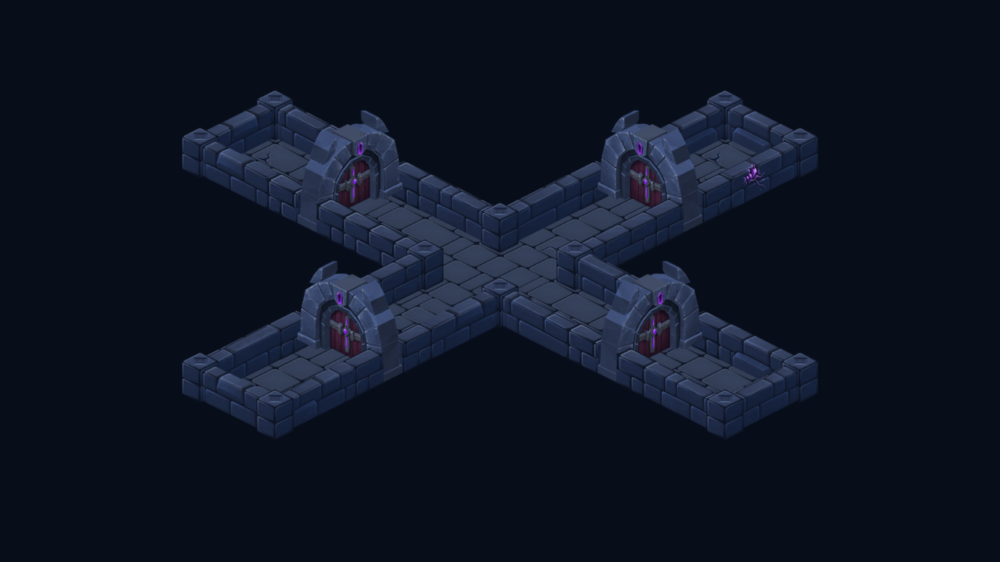
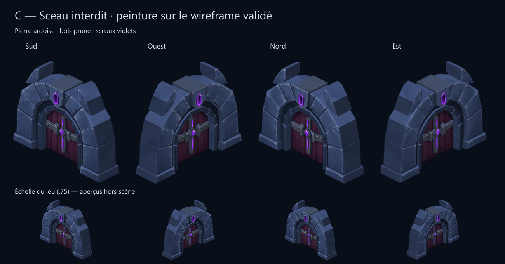

C — Sceau interdit
Peinture intégrée sur le wireframe validé. Captures du rendu Godot ; la vue d’ensemble utilise l’échelle du jeu, les détails sont agrandis.

Les pieds s’insèrent dans une interruption locale du mur. Le raccord réutilise la tranche peinte du mur, masquée par la porte lorsqu’elle passe devant. Suppression et remise de portes vérifiées : aucun masque résiduel.
Atlas : 9 Mio RGBA, inchangé. PNG : +14 164 octets. Les 128 autres régions conservent leurs pixels et leurs paramètres d’affichage. Source des portes réduite à 80 % pour rester dans l’atlas existant ; dimensions dans le monde inchangées.
Peinture et orientations hors scène

Source ImageGen et prompt complet · Contrôle des atlas · Observations Godot
Cette nouvelle peinture reste soumise au retour artistique de l’utilisateur. Validation statique sur ordinateur, sans test sur téléphone, profil de performances ni nouveau test complet de raid.